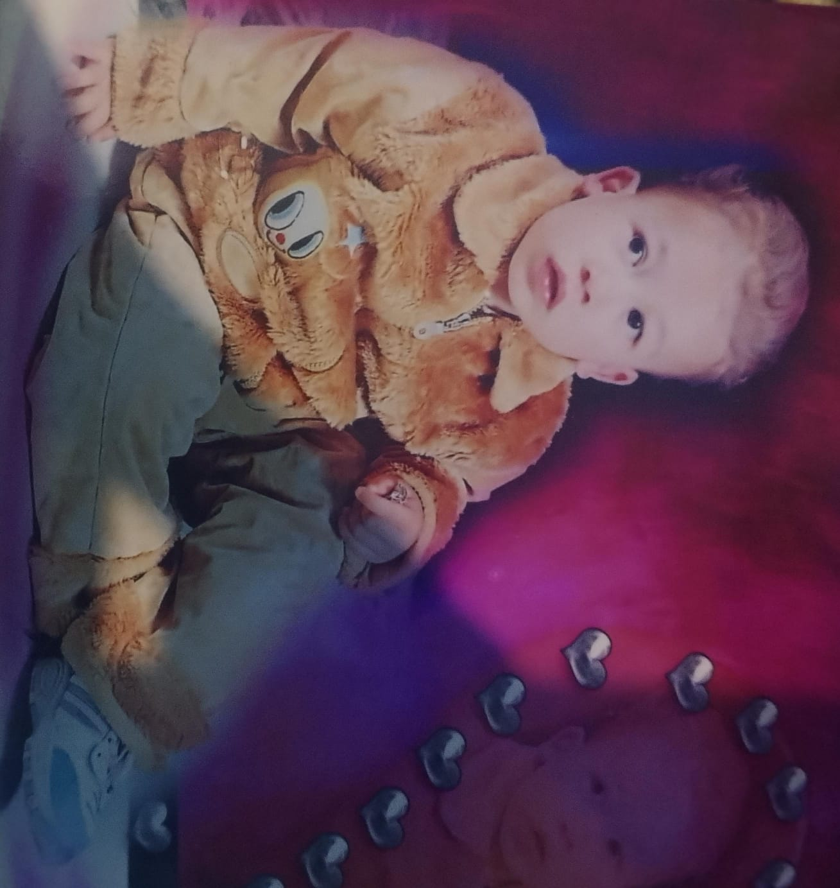
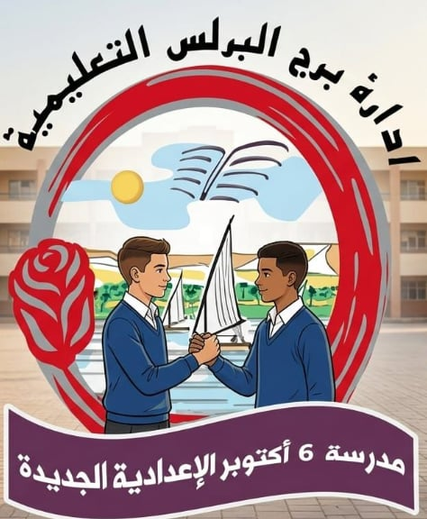
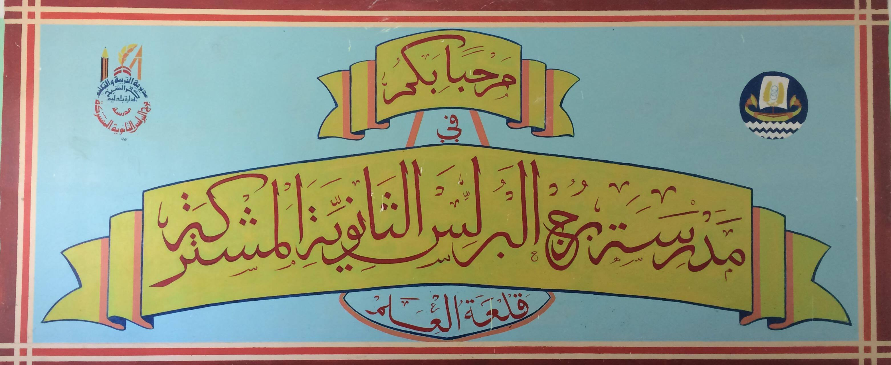
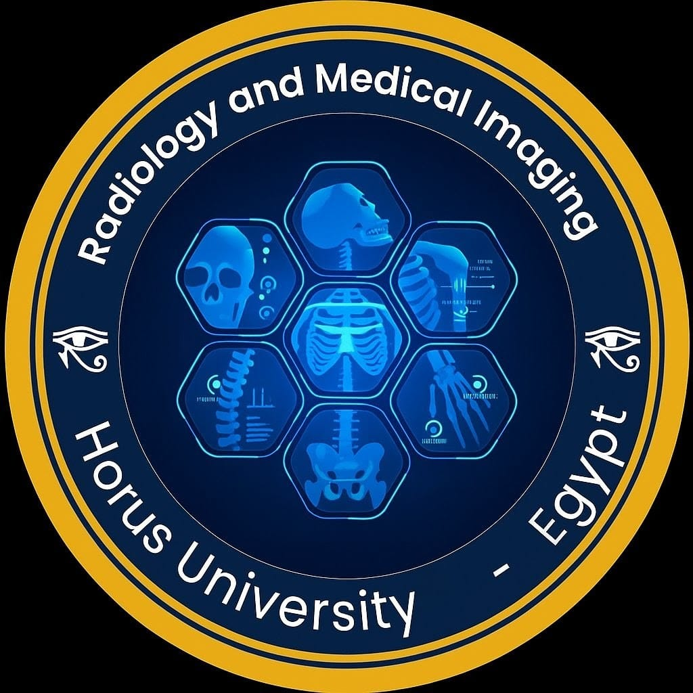

اتولدت سنة 2006، يعني أنا من جيل Z. الجيل اللي كبر وسط العالم الرقمي والتكنولوجيا. المفروض إن ده يخلي الواحد يبدأ يستخدم التكنولوجيا بدري ويغوص فيها، لكن بالنسبة لي الموضوع ما حصلش بالشكل ده في البداية.
رحلتي من البداية حتى الآن
ميلادي
2006

الابتدائية
2013
بعد كده التحقت بمدرسة الشهيد حمدي شرابي الابتدائية. كانت حياة الابتدائي شبه أغلب الناس: لعب، شوية هزار، وشوية مذاكرة. مستوايا الدراسي وقتها كان متوسط.
الإعدادية
2019

بعدها دخلت مدرسة 6 أكتوبر الإعدادية. حضرت الصف الأول الإعدادي بشكل طبيعي ومنتظم، لكن في الصفين الثاني والثالث حصل شيء غير شكل الدراسة وقتها، وهو انتشار فيروس كوفيد-19. المدارس اتقفلت والسنتين عدّوا بنظام الأبحاث بدل الدراسة العادية.
الثانوية
2022

في المرحلة الثانوية كان دايمًا يتقال لنا: العب في أولى وتانية ثانوي، وشد حيلك في تالتة لأنها السنة الفارقة في حياة الإنسان. في الثانوية العامة اخترت شعبة علمي رياضة. سنة تالتة كانت طويلة وصعبة جدًا، لكنها علمتني حاجات كتير. خرجت منها بمجموع 53%، وكان ده أول قلم حقيقي من الحياة، وقتها حسيت إن الدنيا اسودت في وشي ومكنتش عارف أعمل إيه.
نقطة التحوّل
2023
قبل ما أتكلم عن اللي حصل بعد مجموع الثانوية، في لحظة مهمة غيرت مسار حياتي. وهي أول كمبيوتر اشتريته. اشتريت جهاز بإمكانيات متوسطة وبدأت أتعلم إزاي أستخدمه، لأني بصراحة ماكنتش فاهم حاجة في عالم الكمبيوترات. ومع الوقت اكتشفت إن في عالم اسمه البرمجة. من هنا بدأت رحلتي في تعلم أساسيات البرمجة، وكانت دي أول خطوة ليا في دخول عالم تطوير الويب.
الجامعة
2024
.png)
بما إني كنت في الثانوية شعبة علمي رياضة، كان نفسي أدخل كلية هندسة. كنت دايمًا بحب حل المشكلات والتفكير المنطقي، وكنت شايف إن الهندسة ممكن تساعدني أنمي المهارتين دول بجانب التخصص اللي كنت هدرسه. لكن مجموعي في الثانوية العامة كان ليه رأي تاني. قدمت أوراقي في كلية العلوم الصحية التطبيقية بجامعة حورس بدمياط الجديدة، وكان هدفي وقتها إني أتخصص في قسم اسمه إدارة المعلومات الصحية.
بداية التخصص
2025

عديت السنة الأولى في الجامعة بمعدل تراكمي 2. بعد كده اتخصصت في برنامج الأشعة والتصوير الطبي، لأن قسم إدارة المعلومات الصحية ما اتفتحش بسبب قلة الطلب عليه. كانت دي بداية طريق جديد بالنسبة لي داخل المجال الطبي بجانب رحلتي المستمرة في تعلم البرمجة والتكنولوجيا.